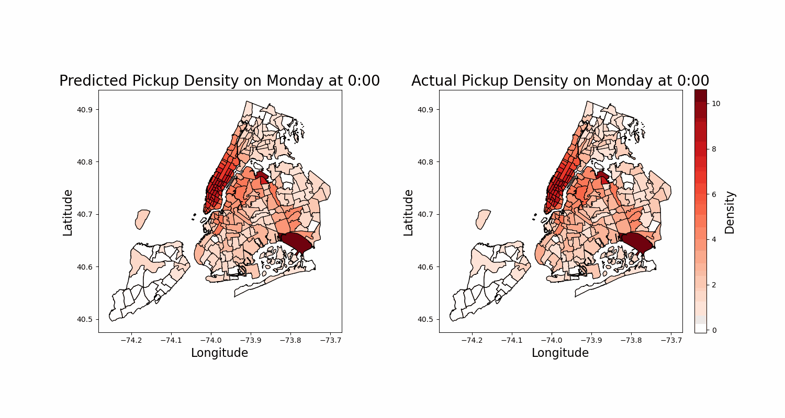
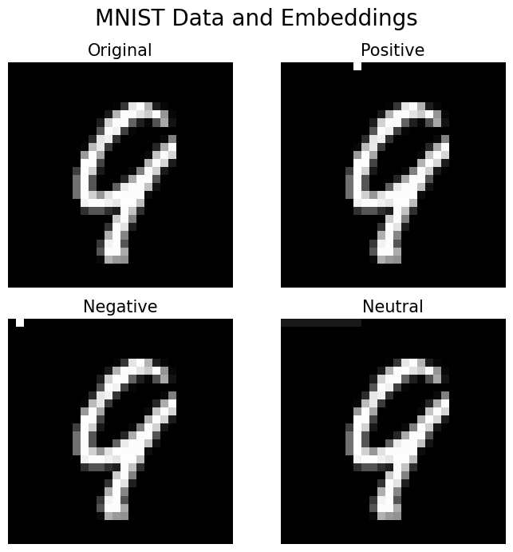

I'm a PhD student at Boston University (BU) Faculty of Computing and Data Sciences (CDS). I am fortunate to work with
Xuezhou Zhang, focusing on reinforcement learning.
Prior to BU, I obtained my bachelors at Brigham Young University (BYU), studying Applied and Computational Mathematics.
During my undergraduate, I was fortunate to work with Mark Kempton on studying
non-backtracking random walks.
Uses clustering algorithms, hidden Markov models, and a statistical jump model to classify historical market regimes and forecast future
predictions on which an investment strategy is built.
AlphaGomoku: Applying AlphaZero to the Game of Gomoku Matthew Shumway,
BYU CS 401R: Dynamic Programming and Reinforcement Learning, 2024
pdf
/
code
Uses a deep reinforcement learning approach based on AlphaZero to learn the game of Gomoku, demonstrating the effectiveness of self-play and neural network-guided search in a simplified 6x6 board setting.

Predicting Pickup Density of Taxi Cabs in NYC Cole Edgren,
Eli Sampson,
Matthew Shumway BYU MATH 402: Modeling with Uncertainty and Data I, 2024
pdf
/
code
Using a LightGBM model to predict taxi cab pickup density in New York City based on historical data and temporal features.

Alternatives to Backpropagation: Exploring the Forward Forward Algorithm Max Fennimore,
Jason Oliphant,
Eli Sampson,
Matthew Shumway,
BYU MATH 522: Mathematical Fundamentals of Deep Learning, 2024
pdf
/
code
An exploration of Geoffrey Hinton's Forward Forward algorithm as an alternative to backpropagation, including implementation details and performance comparisons on standard datasets.
{kind=link}